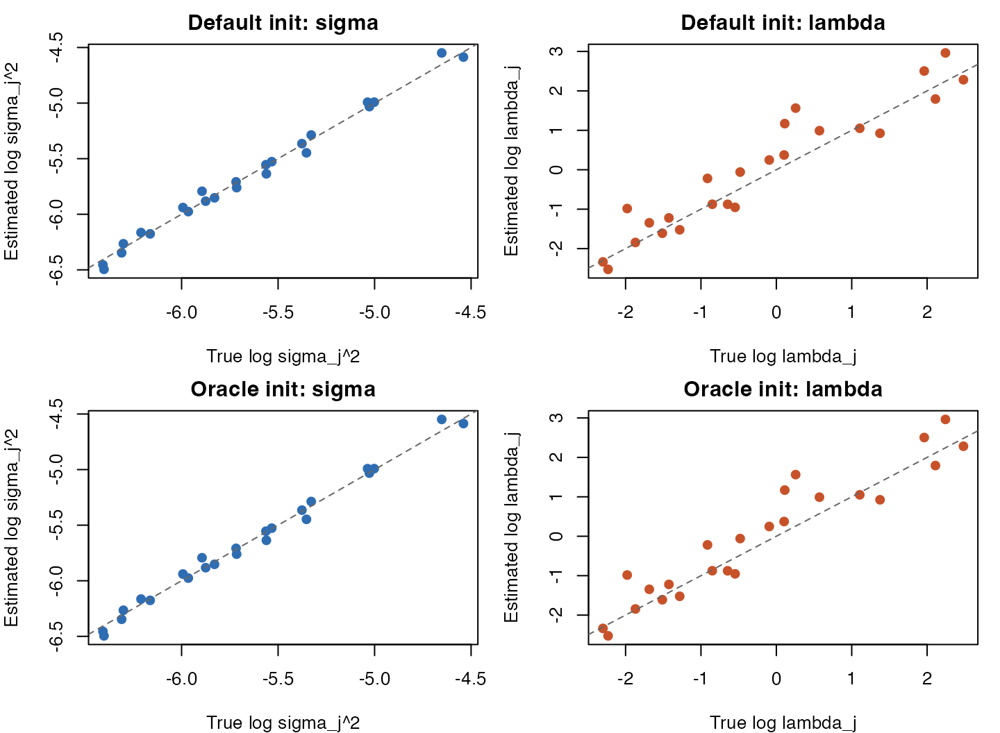
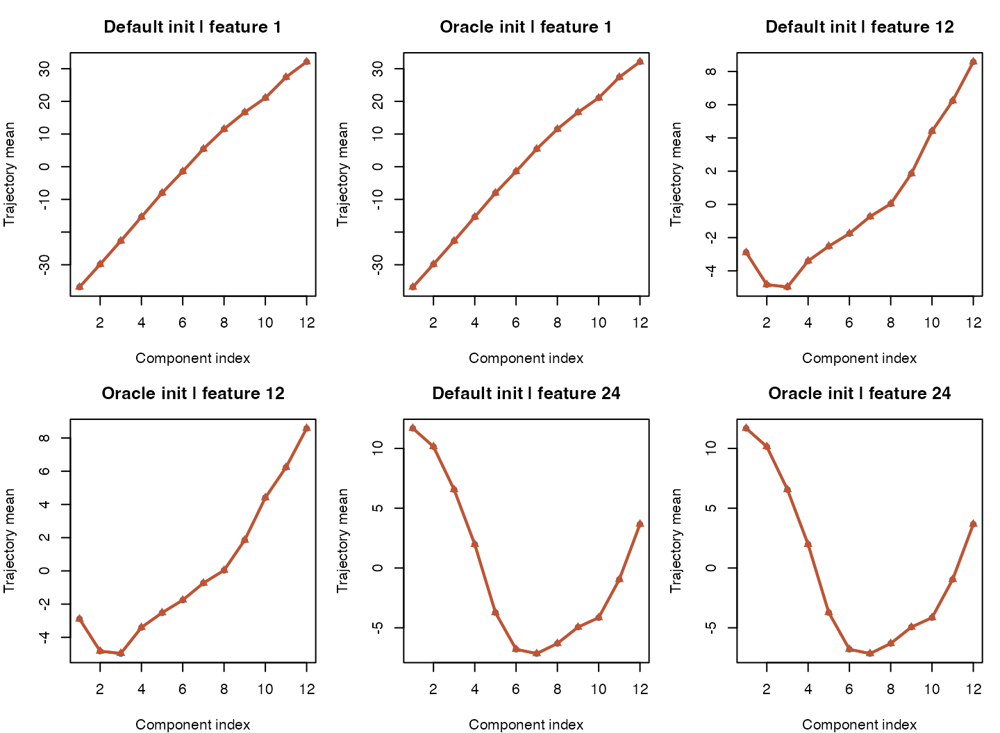

Model-Matched Sanity Check for CAVI MPCurver
cavi_model_matched_sanity_check.RmdThis note performs a basic model-matched sanity check for the current
cavi-based mpcurve pipeline.
The goal is intentionally simple:
- simulate data from the same single-ordering generative model that
caviassumes, - fit
mpcurvewith its defaultcavibackend, - check recovery of ordering, trajectories,
sigma_j^2, andlambda_j, - then repeat the fit with the true ordering supplied as the initialization.
If the single-ordering cavi pipeline is behaving as
expected, this benchmark should be easy.
1 Model-matched simulation
We simulate from the current cavi toy model:
- cells,
- features,
- latent positions,
- feature-specific
lambda_j, - feature-specific
sigma_j^2, - and a small simulation ridge so the GMRF prior is proper.
To make recovery of lambda_j more visible in a scatter
plot, we draw the true smoothness parameters over a fairly wide
range.
sim <- simulate_cavi_toy(
n = 1200,
d = 24,
K = 12,
rw_q = 2,
lambda_range = c(0.1, 15),
sigma_range = c(0.04, 0.12),
ridge = 1e-3,
seed = 11
)
X <- sim$X
cat("Data dimensions:", nrow(X), "x", ncol(X), "\n")
#> Data dimensions: 1200 x 24
cat("True sigma range:",
sprintf("[%.3f, %.3f]", sqrt(min(sim$sigma2)), sqrt(max(sim$sigma2))), "\n")
#> True sigma range: [0.041, 0.103]
cat("True lambda range:",
sprintf("[%.3f, %.3f]", min(sim$lambda_vec), max(sim$lambda_vec)), "\n")
#> True lambda range: [0.100, 11.963]The true ordering in this simulator is the discrete latent component
label z. Because the model is only identifiable up to
reversal of the component axis, all recovery metrics below are reported
after the best global orientation has been chosen.
2 Helper functions
make_gamma_from_z <- function(z, K) {
gamma <- matrix(0, nrow = length(z), ncol = K)
gamma[cbind(seq_along(z), z)] <- 1
gamma
}
align_cavi_fit <- function(fit, sim) {
est_mu <- fit$fit$posterior$mean
true_mu <- sim$mu
z_hat <- max.col(fit$gamma, ties.method = "first")
score_orientation <- function(mu_est, z_est) {
list(
z_acc = mean(z_est == sim$z),
mu_rmse = sqrt(mean((mu_est - true_mu)^2)),
mu_cor = mean(vapply(seq_len(nrow(true_mu)), function(j) {
suppressWarnings(stats::cor(mu_est[j, ], true_mu[j, ]))
}, numeric(1)), na.rm = TRUE)
)
}
forward <- score_orientation(est_mu, z_hat)
reverse <- score_orientation(
est_mu[, ncol(est_mu):1, drop = FALSE],
ncol(est_mu) + 1L - z_hat
)
if (reverse$z_acc > forward$z_acc) {
list(
flip = TRUE,
z_hat = ncol(est_mu) + 1L - z_hat,
mu_hat = est_mu[, ncol(est_mu):1, drop = FALSE],
pi_hat = rev(fit$params$pi),
metrics = reverse
)
} else {
list(
flip = FALSE,
z_hat = z_hat,
mu_hat = est_mu,
pi_hat = fit$params$pi,
metrics = forward
)
}
}
summarise_fit <- function(fit, sim, label) {
aligned <- align_cavi_fit(fit, sim)
data.frame(
fit = label,
z_accuracy = aligned$metrics$z_acc,
mean_curve_cor = aligned$metrics$mu_cor,
mu_rmse = aligned$metrics$mu_rmse,
sigma_cor = suppressWarnings(stats::cor(log(fit$params$sigma2), log(sim$sigma2))),
lambda_cor = suppressWarnings(stats::cor(log(fit$fit$lambda_vec), log(sim$lambda_vec))),
sigma_rmse = sqrt(mean((log(fit$params$sigma2) - log(sim$sigma2))^2)),
lambda_rmse = sqrt(mean((log(fit$fit$lambda_vec) - log(sim$lambda_vec))^2)),
min_elbo_delta = min(diff(fit$elbo_trace)),
stringsAsFactors = FALSE
)
}3 Default fit versus oracle-ordering fit
The first fit uses the standard fit_mpcurve() interface
with the default cavi backend and a normal initialization
method.
The second fit passes the true ordering as a one-hot responsibility matrix. Importantly, this second fit only uses the true ordering as initialization; it does not fix the parameters during optimization.
gamma_true <- make_gamma_from_z(sim$z, K = 12)
fit_default <- fit_mpcurve(
X,
algorithm = "cavi",
method = "PCA",
K = 12,
rw_q = 2,
iter = 150,
ridge = 1e-3,
tol = 1e-8,
verbose = FALSE
)
fit_oracle <- fit_mpcurve(
X,
algorithm = "cavi",
K = 12,
rw_q = 2,
iter = 150,
ridge = 1e-3,
tol = 1e-8,
responsibilities_init = gamma_true,
verbose = FALSE
)
worked_tbl <- rbind(
summarise_fit(fit_default, sim, "default init"),
summarise_fit(fit_oracle, sim, "true ordering init")
)
print(worked_tbl, row.names = FALSE)
#> fit z_accuracy mean_curve_cor mu_rmse sigma_cor lambda_cor
#> default init 1 0.999998 0.006172715 0.9956010 0.95089
#> true ordering init 1 0.999998 0.006172715 0.9956011 0.95089
#> sigma_rmse lambda_rmse min_elbo_delta
#> 0.05139551 0.5217530 3.513854e-04
#> 0.05139538 0.5217529 1.330045e-08On this model-matched benchmark, the main signal is already visible:
- ordering recovery is essentially perfect,
- posterior mean trajectories are almost identical to the truth,
-
sigma_j^2recovery is very strong, -
lambda_jrecovery is noticeably noisier but still tracks the truth well on the log scale, - and supplying the true ordering does not materially change the final fit.
That last point is useful: in this easy regime, the main challenge is not initialization.
4 Objective traces
op <- par(mfrow = c(1, 2), mar = c(4, 4, 2, 1))
plot(fit_default$elbo_trace, type = "b", pch = 19, cex = 0.7,
xlab = "Iteration", ylab = "ELBO",
main = "Default initialization")
plot(fit_oracle$elbo_trace, type = "b", pch = 19, cex = 0.7,
xlab = "Iteration", ylab = "ELBO",
main = "True ordering initialization")ELBO traces for the default fit and the oracle-ordering fit.
par(op)5 Parameter recovery
op <- par(mfrow = c(2, 2), mar = c(4, 4, 2, 1))
plot(log(sim$sigma2), log(fit_default$params$sigma2), pch = 19, col = "#2F6DB3",
xlab = "True log sigma_j^2", ylab = "Estimated log sigma_j^2",
main = "Default init: sigma")
abline(0, 1, lty = 2, col = "grey40")
plot(log(sim$lambda_vec), log(fit_default$fit$lambda_vec), pch = 19, col = "#C7522A",
xlab = "True log lambda_j", ylab = "Estimated log lambda_j",
main = "Default init: lambda")
abline(0, 1, lty = 2, col = "grey40")
plot(log(sim$sigma2), log(fit_oracle$params$sigma2), pch = 19, col = "#2F6DB3",
xlab = "True log sigma_j^2", ylab = "Estimated log sigma_j^2",
main = "Oracle init: sigma")
abline(0, 1, lty = 2, col = "grey40")
plot(log(sim$lambda_vec), log(fit_oracle$fit$lambda_vec), pch = 19, col = "#C7522A",
xlab = "True log lambda_j", ylab = "Estimated log lambda_j",
main = "Oracle init: lambda")
abline(0, 1, lty = 2, col = "grey40")
True versus estimated log-parameters under the two initialization schemes.
par(op)6 Representative trajectory recovery
aligned_default <- align_cavi_fit(fit_default, sim)
aligned_oracle <- align_cavi_fit(fit_oracle, sim)
feat_idx <- c(1L, ceiling(nrow(sim$mu) / 2), nrow(sim$mu))
op <- par(mfrow = c(2, 3), mar = c(4, 4, 3, 1))
for (j in feat_idx) {
ylim_j <- range(c(sim$mu[j, ], aligned_default$mu_hat[j, ], aligned_oracle$mu_hat[j, ]))
plot(seq_len(ncol(sim$mu)), sim$mu[j, ],
type = "o", pch = 16, lwd = 2, col = "#2F6DB3",
ylim = ylim_j, xlab = "Component index", ylab = "Trajectory mean",
main = sprintf("Default init | feature %d", j))
lines(seq_len(ncol(sim$mu)), aligned_default$mu_hat[j, ],
type = "o", pch = 17, lwd = 2, col = "#C7522A")
plot(seq_len(ncol(sim$mu)), sim$mu[j, ],
type = "o", pch = 16, lwd = 2, col = "#2F6DB3",
ylim = ylim_j, xlab = "Component index", ylab = "Trajectory mean",
main = sprintf("Oracle init | feature %d", j))
lines(seq_len(ncol(sim$mu)), aligned_oracle$mu_hat[j, ],
type = "o", pch = 17, lwd = 2, col = "#C7522A")
}
True and inferred trajectories for three representative features.
par(op)7 Five-seed repeat
To check that the worked example is not a lucky seed, we repeat the same benchmark over five simulator seeds.
run_seed <- function(seed, oracle = FALSE) {
sim_i <- simulate_cavi_toy(
n = 1200,
d = 24,
K = 12,
rw_q = 2,
lambda_range = c(0.1, 15),
sigma_range = c(0.04, 0.12),
ridge = 1e-3,
seed = seed
)
args <- list(
X = sim_i$X,
algorithm = "cavi",
K = 12,
rw_q = 2,
iter = 150,
ridge = 1e-3,
tol = 1e-8,
verbose = FALSE
)
if (oracle) {
args$responsibilities_init <- make_gamma_from_z(sim_i$z, 12)
} else {
args$method <- "PCA"
}
fit_i <- do.call(fit_mpcurve, args)
cbind(
seed = seed,
init = if (oracle) "true ordering" else "default",
summarise_fit(fit_i, sim_i, label = "tmp")[, -1, drop = FALSE]
)
}
seed_tbl <- do.call(rbind, c(
lapply(1:5, run_seed, oracle = FALSE),
lapply(1:5, run_seed, oracle = TRUE)
))
print(seed_tbl, row.names = FALSE)
#> seed init z_accuracy mean_curve_cor mu_rmse sigma_cor lambda_cor
#> 1 default 1 0.9999942 0.007499277 0.9977858 0.9602479
#> 2 default 1 0.9999860 0.007992602 0.9989987 0.9793905
#> 3 default 1 0.9999975 0.007046736 0.9984400 0.9468457
#> 4 default 1 0.9999750 0.007989647 0.9965962 0.9818763
#> 5 default 1 0.9999919 0.007182473 0.9989527 0.9531715
#> 1 true ordering 1 0.9999942 0.007499277 0.9977858 0.9602479
#> 2 true ordering 1 0.9999860 0.007992603 0.9989987 0.9793904
#> 3 true ordering 1 0.9999975 0.007046735 0.9984400 0.9468456
#> 4 true ordering 1 0.9999750 0.007989644 0.9965962 0.9818767
#> 5 true ordering 1 0.9999919 0.007182473 0.9989527 0.9531716
#> sigma_rmse lambda_rmse min_elbo_delta
#> 0.03863726 0.5057653 2.714104e-04
#> 0.03284008 0.2964991 3.404493e-07
#> 0.03851369 0.4524891 8.691647e-05
#> 0.05051477 0.3730938 3.243520e-06
#> 0.03759356 0.4859484 1.055182e-05
#> 0.03863689 0.5057651 6.754635e-08
#> 0.03284005 0.2964992 3.122510e-06
#> 0.03851314 0.4524872 3.051846e-04
#> 0.05051476 0.3730855 1.432977e-05
#> 0.03759342 0.4859483 1.247645e-07
seed_summary <- aggregate(
cbind(z_accuracy, mean_curve_cor, mu_rmse, sigma_cor, lambda_cor,
sigma_rmse, lambda_rmse, min_elbo_delta) ~ init,
data = seed_tbl,
FUN = mean
)
print(seed_summary, row.names = FALSE)
#> init z_accuracy mean_curve_cor mu_rmse sigma_cor lambda_cor
#> default 1 0.9999889 0.007542147 0.9981547 0.9643064
#> true ordering 1 0.9999889 0.007542146 0.9981547 0.9643065
#> sigma_rmse lambda_rmse min_elbo_delta
#> 0.03961987 0.4227592 7.449254e-05
#> 0.03961965 0.4227570 6.456583e-058 Takeaway
This is the basic sanity check that the single-ordering
cavi pipeline should pass, and it does:
- on data generated from the true model,
fit_mpcurve(..., algorithm = "cavi")recovers the latent ordering almost perfectly, - the inferred trajectories are essentially on top of the truth,
-
sigma_j^2is recovered very accurately, -
lambda_jis harder, but still strongly aligned with the truth on the log scale, - and giving the true ordering as initialization produces almost the same final answer.
So in this model-matched regime, the main cavi-based
mpcurve pipeline behaves exactly as a basic sanity check
would ask it to behave.